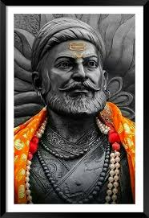
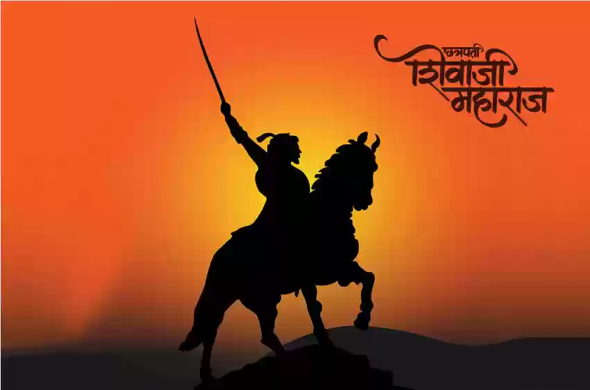

INTRODUCTION

Chhatrapati Shivaji Maharaj (1630-1680) was a Maratha warrior and the founder of the Maratha Empire in
western India. He was a prominent figure in India's fight for self-governance and against the Mughal Empire.
FOR SHIVAJI MAHARAJ
After Shivaji's death in 1680, his son Sambhaji became the ruler of the Maratha Empire. In 1689, Sambhaji
was captured by the Mughal Emperor Aurangzeb and was tortured and executed. After Sambhaji's death, his younger
brother Rajaram succeeded him as the ruler of the Maratha Em
Time itself changes for those determined to constantly work towards their goal even in the worst of time."
